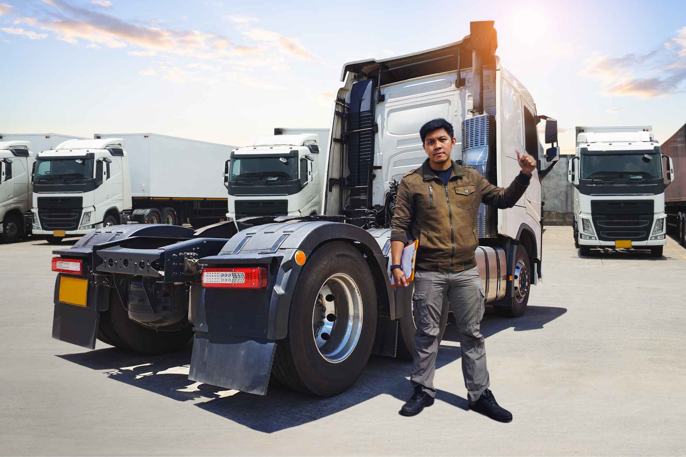
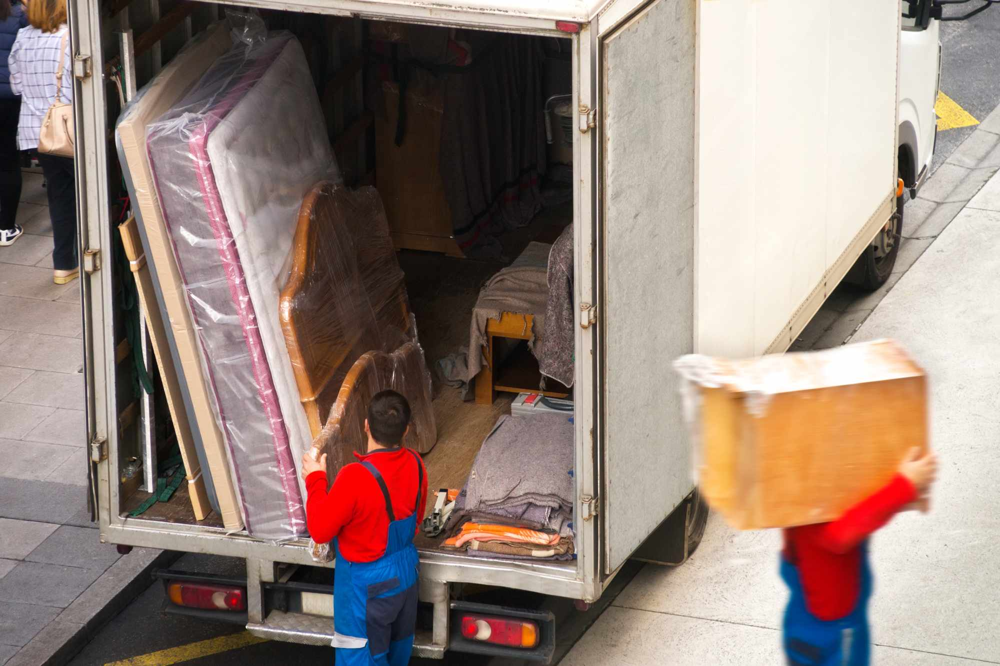
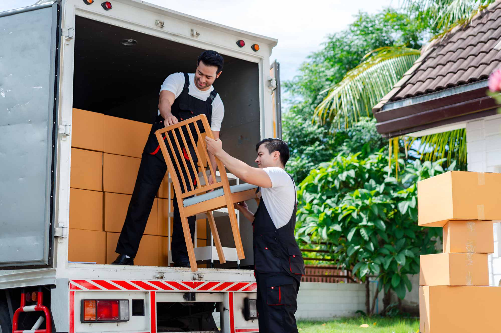
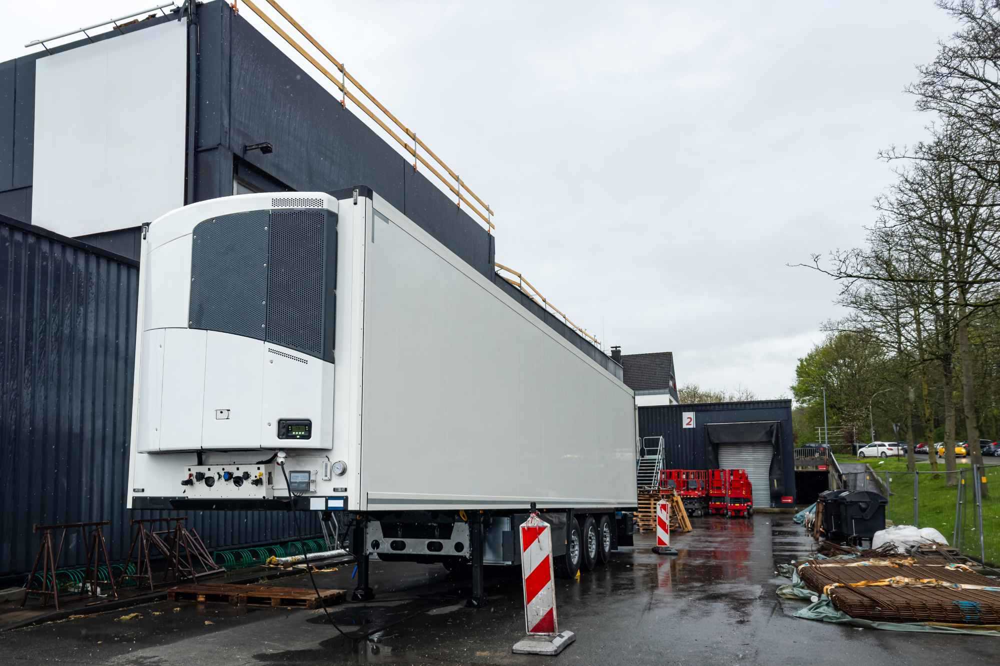

In a world where time is currency, choosing the right courier service can make or break your schedule. Whether you're sending urgent documents, valuable items, or large packages, the speed and safety of delivery matter most. Saqib Transport Pty Ltd understands this urgency and offers courier solutions tailored to your specific needs. Our team is trained to handle items with the utmost care, ensuring they arrive in perfect condition. From the moment your package is picked up, it's tracked, secured, and managed with precision. Trust us to bridge the gap between sender and receiver seamlessly.
We’ve built our reputation on punctuality and reliability—traits that customers come back for time and again. With our decade-long experience in the industry, we’ve fine-tuned our operations to deliver not just parcels, but peace of mind. Our fleet is modern, maintained regularly, and ready to move at a moment’s notice. Every delivery is a commitment we take seriously, regardless of size or distance. Whether it’s across town or to the next suburb, our consistency remains unmatched. We don’t just promise—we deliver, literally.
What sets our courier services apart is our dedication to personalization. We understand that not all deliveries are the same, which is why we offer flexible solutions for individuals and businesses alike. Need same-day delivery? No problem. Want scheduled pickups for your office? We’ve got you covered. Our customer-centric approach allows us to tailor each service to meet your unique demands. With Saqib Transport Pty Ltd, you're not just hiring a courier—you’re gaining a delivery partner.
Efficiency is at the heart of our operations. Our drivers know the local routes like the back of their hands, avoiding delays and navigating peak-hour traffic with ease. We leverage route optimization tools to ensure your items reach their destination in the shortest possible time. Communication is key, and we keep you informed with real-time updates throughout the process. You’ll never be left wondering where your parcel is. This level of transparency is just one of the reasons our clients trust us.
Security is another major pillar of our courier services. Every item entrusted to us is handled with the strictest attention to safety and confidentiality. Fragile? Valuable? Time-sensitive? We treat each delivery with the respect it deserves. Our team is trained in proper handling, packing, and unloading procedures to avoid any damage. For businesses that need regular secure deliveries, we offer contracts tailored to your schedule. We go the extra mile so your package doesn’t have to.
We take pride in making our services accessible and affordable. While other providers may charge a premium for speed or volume, we offer fair pricing without compromising on quality. Bulk deliveries, urgent drop-offs, or custom courier routes—our transparent pricing model makes it easy for you to plan. Whether you're a small business or a busy homeowner, you’ll find our services both efficient and cost-effective. It’s not just about affordability—it’s about value. That’s what Saqib Transport delivers every single day.
Customer service is more than just a department for us—it’s a philosophy. From your first inquiry to the final delivery, our friendly team is here to assist with clarity and care. We listen to your concerns, offer solutions, and ensure your experience is smooth from start to finish. Feedback is welcomed and acted upon, helping us continuously improve. Our clients aren’t just customers—they’re part of our community. At Saqib Transport, you’re not a number; you’re a priority.
Choosing Saqib Transport Pty Ltd means choosing reliability, speed, and care in every delivery. In a fast-moving world, you need a courier service that doesn’t just keep up—but stays ahead. Our commitment to excellence is reflected in every package we deliver, and every promise we keep. So the next time you need a courier, think beyond basic logistics—think professional, thoughtful, and driven service. Let us handle the distance while you focus on what matters. Your delivery is in safe hands.
Relocating within your local area might seem straightforward, but it often comes with its own set of challenges. From tight parking spots to tricky staircases, moving nearby still demands careful planning and skilled handling. At Saqib Transport Pty Ltd, we specialise in local removals designed to take the weight off your shoulders—literally. Our experienced team ensures a smooth process from start to finish, saving you both time and stress. No move is too small or too complex for us to handle with care. We treat your belongings as if they were our own.
When it comes to moving, timing is everything. We know that our clients lead busy lives and need a service that works around their schedule. That’s why we offer flexible appointment slots, including weekends, to suit your needs. Our punctual crew arrives on time, ready to get the job done quickly and efficiently. We come prepared with all the necessary equipment and tools to ensure your items are moved safely. There are no delays or excuses—just professional service you can count on.
Local removals are not just about transportation; they’re about trust. You're inviting movers into your home to handle your most valued possessions, and that requires confidence in their expertise. At Saqib Transport, our team members are friendly, trained, and respectful of your space. We pay attention to the small details that matter—protecting door frames, wrapping furniture, and navigating tricky hallways. It's this level of care that sets us apart from the rest. Moving locally doesn’t mean cutting corners, and we never do.
One of the biggest concerns during any move is damage, and rightfully so. Our crew uses high-quality packing materials and techniques to secure your furniture and belongings properly. From fragile dishes to bulky wardrobes, we have solutions for all your packing needs. We also offer disassembly and reassembly services for beds, tables, and more. By handling the heavy lifting and technical parts, we free you up to focus on settling into your new space. Your items will arrive exactly as they left—safe and intact.
Our local knowledge gives us a serious edge over the competition. We understand the area’s traffic patterns, council regulations, and parking challenges better than most. This allows us to plan the most efficient routes and avoid potential delays on the day of your move. Whether you're relocating across the street or to the next suburb, we make the process seamless. You won’t have to worry about navigating or coordinating anything—we’ve got it covered. Let us turn your local move into a well-oiled operation.
Budget is always a consideration when planning a move, but local removals don’t have to break the bank. We offer competitive pricing that reflects the quality and reliability of our service. Our quotes are transparent, with no hidden charges or last-minute surprises. Whether you’re moving a studio apartment or a family home, we provide solutions that match your budget. At Saqib Transport, affordability meets excellence. You’ll get maximum value with minimal fuss.
We understand that no two moves are the same, which is why we customise our approach for every client. Need help packing beforehand? Want to move a piano or a pool table? We can do that. Our team will discuss your unique needs before the move so that everything goes smoothly on the big day. You won’t be left scrambling or guessing what happens next. We take the time to listen and plan accordingly, making sure nothing is overlooked. That’s the kind of support you deserve.
At the end of the day, moving should be an exciting transition—not a stressful ordeal. With Saqib Transport Pty Ltd handling your local removal, you can focus on what matters most—starting your next chapter. Our combination of professionalism, care, and local expertise makes us the go-to choice for removals in the area. We’re not just a transport company—we’re your moving partner. Ready to make your next move your best move? Let’s get you there, hassle-free.

Not every job requires a truck, but it does need the right tools. That’s where trailer hire steps in—offering flexibility and convenience for all your transport needs. Whether you're clearing out the garage, doing a weekend project, or shifting heavy goods, a trailer can make it easier. At Saqib Transport Pty Ltd, we offer well-maintained trailers that are reliable, clean, and ready to go. You don’t have to own one to get the benefits of quality hauling. Just hire it when you need it—and return it when you're done.
One size doesn’t fit all, and we understand that better than most. That’s why we offer a variety of trailer types to suit different jobs—from box trailers to cage trailers and flatbeds. If you're not sure which one is best, our friendly staff will guide you through your options. We make it easy to pick the right trailer for your task without any confusion. Whether it’s a quick pick-up or a full day’s work, we’ve got the right fit. Convenience meets choice at every turn.
Flexibility is key in today’s fast-paced world. Our trailer hire services are designed to work around your schedule, not the other way around. Need it for a few hours? A full weekend? We've got rental plans that accommodate both short-term and extended periods. With simple booking procedures and competitive pricing, we take the stress out of last-minute needs. No waiting, no overpaying—just smooth, reliable service. You focus on the task; we’ll handle the transport.
Safety is always our top priority when it comes to hiring out equipment. Every trailer in our fleet is regularly inspected and maintained to ensure it’s roadworthy and ready for use. We provide clear instructions and safety checks before you drive away, so you feel confident and secure. If it’s your first time using a trailer, don’t worry—we’ll walk you through the basics. Our team ensures you're well-prepared for the journey ahead. Your peace of mind matters just as much as your load.
For tradespeople and small business owners, trailers are a game-changer. Why invest in costly equipment when you can hire exactly what you need, when you need it? Our reliable fleet gives you the freedom to focus on the job, not the logistics. From hauling tools to transporting supplies, we make your day more efficient. You don’t have to compromise on quality or reliability. With Saqib Transport, professional support is just a call away.
We take pride in offering a service that’s straightforward and stress-free. There are no complicated contracts or hidden charges—just honest service that delivers what it promises. Our booking process is quick and simple, both online and in-person. Need to extend your hire? No problem. We’re flexible because we understand that plans can change. With us, you’re not just hiring a trailer—you’re gaining a dependable partner for the task.
Customer satisfaction drives everything we do. We listen to your needs and offer solutions that make sense for your budget and timeline. Our team is always ready to answer questions, provide advice, and help with loading tips if needed. Whether you're a weekend DIYer or a business owner moving stock, we treat every customer with equal importance. At Saqib Transport, we believe good service builds lasting relationships. That’s why so many locals keep coming back.
When the job demands extra hauling power, don’t struggle—hire smart. With Saqib Transport Pty Ltd, trailer hire is no longer a hassle but a practical solution at your fingertips. We offer quality equipment, flexible rental options, and friendly support every step of the way. From small loads to bulky items, we’ve got the trailer and the expertise you can count on. Let us help you move more with less effort. Ready to roll? We’ve got your trailer waiting.
When the load gets too big for your car or trailer, hiring a truck is the smart solution. Whether it’s for moving furniture, transporting goods, or completing a construction job, the right truck can make all the difference. At Saqib Transport Pty Ltd, we offer dependable truck hire options built to handle tough tasks with ease. Our trucks are clean, well-maintained, and ready to work when you are. We take pride in offering a solution that’s as strong as it is straightforward. With us, you’re hiring more than a vehicle—you’re hiring confidence.
Every job is different, and that’s why we provide a diverse fleet to match your requirements. Need a compact truck for tight spaces or a large vehicle for bulky items? We’ve got you covered. Our range includes various sizes and load capacities, so you never pay for more than you need. Our team will guide you to the right choice based on your project details. From single-day hires to longer-term rentals, we offer the flexibility to suit your schedule. The right truck, at the right time, for the right price.
Time is valuable, and we respect that by offering a smooth and efficient hire process. No lengthy paperwork or hidden conditions—just clear terms and easy bookings. You can reserve your truck in advance or even on short notice, depending on availability. We know how critical timing is in logistics, so our fleet is always ready for a quick turnaround. Pick-up and drop-off procedures are designed to be hassle-free. You’ll be in and out, and on the road, faster than you’d expect.
Safety is something we never take lightly. Each vehicle undergoes regular mechanical inspections to ensure it meets the highest standards before it reaches you. We also provide safety guidelines and basic operation instructions to give you peace of mind. For drivers unfamiliar with truck handling, we offer practical tips to help you stay in control. Our trucks come equipped with everything needed for a secure transport. Because your safety—and the safety of your cargo—comes first.
Hiring a truck shouldn’t feel like a gamble. At Saqib Transport, we guarantee reliability by maintaining a top-tier fleet and hiring knowledgeable staff who genuinely care. From booking to return, our team is here to help make your experience seamless. We’re more than just a service—we’re your transport partner, invested in helping you succeed. Need advice on route planning or loading strategies? Just ask. We’re here to make the job smoother, not more stressful.
Affordability is one of the cornerstones of our truck hire service. We offer competitive rates without compromising on vehicle quality or customer support. You won’t find confusing surcharges or unexpected fees when you hire with us. Transparent pricing means you can budget confidently for your project. Whether it’s a one-off job or a recurring need, we’re committed to giving you real value. High performance doesn’t have to come at a high cost.
Our customers range from homeowners and small business owners to contractors and logistics teams. No matter your background, we aim to deliver a service that exceeds expectations. We listen, we adapt, and we focus on what matters to you—getting the job done right. Our reputation has been built on trust, repeat business, and positive word-of-mouth. That’s why so many clients turn to us time and time again. When you need a truck you can count on, we’re just a call away.
Truck hire shouldn’t be complicated—and with Saqib Transport Pty Ltd, it never is. We offer the muscle, mobility, and customer service that turns heavy lifting into a light task. With our help, you’ll meet your deadlines, protect your goods, and stay within your budget. It’s about more than just wheels—it’s about moving forward with confidence. Let us put the power of professional truck hire in your hands. Because when you hire with us, you’re always in the driver’s seat.
Relocating an office is more than just shifting desks and boxes—it’s about keeping your business running without a hitch. At Saqib Transport Pty Ltd, we understand the pressure that comes with transitioning to a new workspace. Delays, disorganization, and downtime can impact your operations, but we’re here to prevent that. Our office relocation services are planned with precision, professionalism, and business continuity in mind. We handle everything behind the scenes so your team can focus on what they do best. Your move should be a step forward, not a setback.
From small studios to large corporate spaces, every office move has its own unique demands. That’s why we offer tailored solutions based on your team size, equipment, and timelines. Whether you’re upgrading, downsizing, or changing locations, we’ll create a plan that suits your goals. Our crew is trained in handling electronics, office furniture, and confidential materials with care. Nothing is left to chance—we map out every detail ahead of time. You can count on us to deliver a seamless transition from start to finish.
Time is a critical factor in office relocations, and we’re experts at working within tight windows. We schedule moves after hours or on weekends to ensure minimal disruption to your business activities. With a strong sense of urgency and discipline, our team gets in, gets the job done, and gets out efficiently. We provide clear timelines and regular updates so you always know where things stand. It’s about respecting your business, your employees, and your time. With us, you won’t miss a beat.
We know your office holds more than just furniture—it houses tools, data, and team collaboration. That’s why we take special care in packing, labeling, and transporting all items securely. Sensitive documents, IT equipment, and personal workstations are all handled with discretion and professionalism. We use top-quality packing supplies and proven methods to protect your assets during transit. When you arrive at your new space, everything will be exactly where it needs to be. Organized, intact, and ready for business.
Communication is key throughout any office move, and we make it a priority. You’ll be assigned a dedicated move coordinator who will oversee every aspect of the relocation. This single point of contact ensures consistency, quick problem-solving, and clear communication at every stage. Questions, concerns, or last-minute changes? We’re responsive, adaptable, and committed to making things work. Our goal is to give you peace of mind while we handle the heavy lifting. A stress-free move starts with solid support.
At Saqib Transport, we combine experience with innovation to deliver results that exceed expectations. With over a decade of experience, we know the ins and outs of commercial moves—what works, what doesn’t, and how to stay ahead. We continually refine our approach based on client feedback and evolving needs. No two moves are alike, but our commitment to quality never changes. We aim to build long-term relationships by delivering value and professionalism every time. That’s how we’ve become a trusted name in relocation services.
Affordability and efficiency go hand in hand when you choose our team. We offer competitive pricing with transparent quotes, tailored to your specific requirements. Whether it’s a full-scale move or just the essentials, we make sure you get great service without overextending your budget. With no hidden fees and clear breakdowns, you’ll always know what you’re paying for. We believe professional service should be accessible to businesses of all sizes. Moving smart doesn’t have to mean spending more.
Your new office space represents new beginnings, fresh opportunities, and growth. Let Saqib Transport Pty Ltd be the partner that helps you start strong in your new location. We’ll manage the relocation with speed, care, and a deep understanding of business needs. You’ll walk into your new workspace ready to pick up where you left off—only better. No chaos, no confusion, just a clean handover and a confident restart. Make your next move the easiest one yet—with the professionals who do it best.

Relocating to a new home is a major life event—exciting, but often overwhelming. From packing up your life’s belongings to coordinating timelines, the process can be chaotic without the right support. That’s where Saqib Transport Pty Ltd comes in. We specialize in turning moving day into a smooth, organised experience. Our goal is simple: take the stress out of your hands and replace it with peace of mind. Because moving should feel like a fresh start, not a burden.
Every house move is different, which is why we don’t believe in one-size-fits-all services. We begin by understanding your needs—how many rooms, what types of items, and your preferred schedule. Whether you’re moving from an apartment, townhouse, or large family home, we tailor our service to fit. Our team handles everything with care and efficiency, so nothing gets overlooked. We know how important your possessions are, and we treat them with the respect they deserve. Customised service means a smoother, more comfortable move for you.
Packing is one of the most time-consuming parts of any move—but it doesn’t have to be. We offer optional packing services using durable materials to protect fragile and valuable items. If you prefer to pack yourself, we can supply professional-grade boxes, tape, and wrap to get you started. Our team also assists with labeling and organizing, so unpacking is easier later on. It’s all about making the process more manageable and less rushed. With us, every detail is considered before the truck even arrives.
We know moving day can be hectic, which is why punctuality is one of our top priorities. Our crew shows up on time, ready with the right tools, equipment, and attitude to get the job done. From lifting heavy furniture to safely loading your boxes, we move swiftly without compromising care. Narrow doorways, tricky staircases, and tight corners are no issue—we’ve seen it all. Our goal is to get you packed, transported, and settled in as efficiently as possible. Your time matters, and we never waste it.
What truly separates us is how we handle your belongings. We use protective blankets, trolleys, and straps to prevent damage during transport. Special attention is given to delicate items like mirrors, glassware, and electronics. Larger items, such as wardrobes and beds, can be dismantled and reassembled on-site. We believe safety and care go hand in hand during any successful move. You can relax knowing everything will arrive at your new home just as it left the old one. We move your belongings like we would our own.
At Saqib Transport, we understand that trust is earned—not assumed. That’s why our team is made up of friendly, reliable professionals who genuinely care about your experience. We’re not just movers; we’re partners in your transition. Our courteous approach and attention to detail make all the difference when emotions are running high. We’re here to make the journey as smooth and comfortable as possible. And we do it with a smile, every time.
We also believe in fair pricing without compromising quality. Our quotes are transparent, detailed, and tailored to your specific move. No surprise fees, no inflated rates—just honest value that matches the service provided. Whether you’re moving a few blocks or several suburbs away, we ensure you get top-tier service at a competitive rate. Affordability and professionalism don’t have to be mutually exclusive. With us, you really can have both.
Moving house marks the beginning of a new chapter—and we’d be honoured to help you turn the page. From planning and packing to transport and setup, we’re with you at every step. Let Saqib Transport Pty Ltd handle the heavy lifting while you focus on settling into your new home. Our experience, care, and commitment make all the difference. Choose the house removal team that moves you—and everything you care about—with skill and heart. Ready to move? Let’s make it memorable for all the right reasons.

Furniture removal isn’t just about muscle—it’s about technique, timing, and trust. Whether you’re shifting a few items or relocating your entire home, the way your furniture is handled matters. At Saqib Transport Pty Ltd, we’ve built a reputation for treating every piece like it has value—because to you, it does. From antique dressers to modern sofas, we understand how to move things without causing damage. Our expert team brings skill, patience, and the right tools for every job. When it comes to furniture, we don’t take chances—we take care.
What sets our service apart is our attention to detail before we even start moving. We begin with an assessment to understand what needs to be moved, how large the items are, and any special care required. This helps us plan the safest, most efficient way to transport everything. We’ll also identify tight hallways, staircases, or access challenges ahead of time. No rushing, no guessing—just smart planning that avoids last-minute surprises. Every move is different, and we treat it that way.
Some furniture pieces are more than just functional—they're sentimental. Whether it’s a family heirloom, a custom-built cabinet, or a vintage armchair, we take the time to protect what matters. Our team uses high-grade padding, wraps, and lifting gear to shield items from bumps and scrapes. We also disassemble and reassemble larger pieces, ensuring they’re moved safely and reinstalled exactly where you want them. It’s this hands-on, thoughtful service that has earned us the trust of so many families. We move with care, not just caution.
Our furniture removal services are ideal for both homeowners and renters looking for an easy transition. Moving locally? Need to rearrange your space or shift items into storage? We’re equipped to help. You don’t have to worry about lifting, hauling, or securing anything—we do it all for you. And we work with speed and precision, so your day stays on track. No delays, no damage—just a job done right from start to finish.
Large, bulky, or awkwardly shaped furniture often creates stress on moving day—but not when you hire the right team. Our professionals are trained to move everything from heavy wardrobes and lounges to fragile tables and delicate shelving. We come prepared with the right trolleys, straps, and moving blankets to make the process safe and efficient. Our approach combines physical strength with practical expertise, minimizing the risk of injury or damage. We handle the hard part so you don’t have to. Your furniture is safe in our hands.
Transparency is a big part of how we operate. When you book with Saqib Transport, you’ll receive a clear breakdown of the service, timing, and costs involved. No confusing terms, no surprise charges—just honest, upfront pricing you can trust. We tailor our quotes to your specific needs, not a flat rate that assumes one size fits all. Whether it’s one room or an entire property’s worth of furniture, we keep it fair. Quality service doesn’t need to come with a hefty price tag.
We understand that moving furniture can disrupt your routine, which is why we work around your schedule. Need an early morning pickup? Weekend service? We’re flexible, dependable, and committed to delivering a stress-free experience. Communication is key, and we keep you informed every step of the way. You’ll never be left wondering where we are or what’s happening next. From first call to final placement, we’re with you every step of the way.
At the end of the day, it’s not just about moving furniture—it’s about moving memories, comfort, and peace of mind. That’s why our customers return to us for every relocation, big or small. At Saqib Transport Pty Ltd, we treat every removal like it's our own, with professionalism and genuine care. Let us take the burden off your shoulders and deliver service that’s as smooth as it is reliable. Moving furniture doesn’t have to be a struggle—it just takes the right team. And we’re ready when you are.

Moving house or shifting a business location can be overwhelming without expert help. At Saqib Transport Pty Ltd, we combine experience with professionalism to handle both residential and commercial removals with ease. Our team is equipped to manage everything from personal items to office equipment, ensuring smooth transitions. We understand the importance of timing, care, and clear communication in every move. Whether it’s your family home or company premises, we make relocation hassle-free. Trust us to get you from A to B—without the stress.
Residential moves require a personal touch—each home carries memories, routines, and valuable possessions. We take the time to understand your moving needs, offering services tailored to the size and complexity of your household. Our trained team carefully packs and transports your belongings with the attention they deserve. From fragile glassware to large furniture, we handle it all with respect. We also help with setup at your new location, placing items where you need them. It's a full-service approach designed for peace of mind.
When it comes to commercial removals, the goal is simple—minimise downtime and maximise efficiency. We know that every minute your business is offline can impact productivity, so we plan every detail carefully. Our crew works swiftly and systematically, ensuring your equipment, furniture, and documents arrive intact and on time. Whether it’s an office, a retail space, or a small warehouse, we’re prepared for the task. We coordinate closely with you to ensure the move fits your schedule. With us, your business stays in motion.
One of our key strengths is flexibility. No two moves are the same, which is why we offer customised packages to suit different needs. Whether you're relocating a one-bedroom apartment or a multi-floor corporate office, we adapt our approach. You can choose to include packing services, disassembly, or after-hours moves to reduce disruption. We're here to simplify the process, not complicate it. You tell us what you need—we’ll make it happen. Our job is to make your life easier.
Planning and communication are central to a successful move, and we prioritise both. Before moving day, we conduct a detailed consultation to map out logistics and address potential challenges. This helps prevent unexpected issues and ensures a clear, efficient process from start to finish. You'll have one point of contact who keeps you updated and informed throughout. We believe transparency builds trust, and we never leave our clients guessing. With us, you’re always in the loop.
Our team comes equipped with modern tools, safety gear, and well-maintained vehicles to get the job done right. For residential moves, that means protecting your floors, walls, and furniture throughout the process. In commercial settings, it means safeguarding tech, files, and fittings from damage. We approach every move with the same level of care and attention, regardless of size. Professionalism is in the details—and we never overlook them. When you choose us, you choose peace of mind.
Affordability matters, and we believe expert service should still be accessible. That’s why our pricing is fair, transparent, and tailored to your specific move. We provide clear quotes with no hidden fees, so you always know what to expect. Whether you're a family on a budget or a business working within tight margins, we have options for you. Quality and value go hand in hand at Saqib Transport. We make sure you get both, every single time.
Residential and commercial relocations don’t have to be daunting—they just need the right team. With Saqib Transport Pty Ltd, you get experienced professionals who care about your move as much as you do. We take pride in offering a smooth, reliable service from the first box packed to the final piece unloaded. Let us handle the logistics while you focus on what comes next. One team, two specialties, and a commitment to doing it right. Moving made simple—every step of the way.